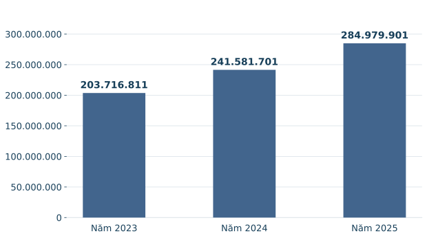
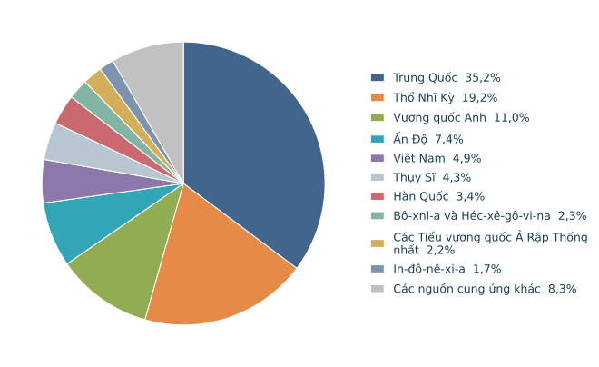
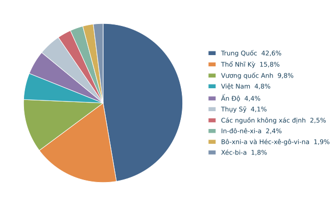
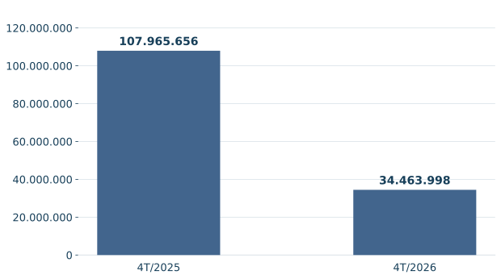

Tiếp nhận hồ sơ yêu cầu rà soát biện pháp chống bán phá giá đối với thép mạ nhập khẩu từ Trung Quốc và Hàn Quốc
Cục Phòng vệ thương mại (Bộ Công Thương) vừa thông báo tiếp nhận hồ sơ yêu cầu rà soát việc áp dụng biện pháp chống bán phá giá đối với một số sản phẩm thép mạ có xuất xứ từ Cộng hòa Nhân dân Trung Hoa và Đại Hàn Dân quốc.
Trước đó, ngày 14/8/2025, Bộ Công Thương đã ban hành Quyết định số 2310/QĐ-BCT áp dụng thuế chống bán phá giá chính thức đối với một số sản phẩm thép mạ nhập khẩu từ Trung Quốc và Hàn Quốc trong khuôn khổ vụ việc AD19. Việc áp dụng biện pháp được thực hiện nhằm ngăn chặn tác động tiêu cực của hàng hóa bán phá giá đối với ngành sản xuất thép mạ trong nước, góp phần bảo đảm môi trường cạnh tranh công bằng trên thị trường.
Theo Cục Phòng vệ thương mại, việc tiếp nhận hồ sơ rà soát được thực hiện theo quy định tại Điều 51 Nghị định số 86/2025/NĐ-CP quy định chi tiết một số điều của Luật Quản lý ngoại thương về các biện pháp phòng vệ thương mại.
Cơ quan điều tra cho biết các bên liên quan theo quy định tại Điều 56 Nghị định số 86/2025/NĐ-CP có quyền nộp hồ sơ đề nghị rà soát biện pháp chống bán phá giá đang được áp dụng. Hồ sơ yêu cầu rà soát phải đáp ứng đầy đủ các nội dung, thông tin và tài liệu theo quy định tại khoản 1 Điều 57 của Nghị định này.
Việc rà soát là cơ chế được pháp luật quy định nhằm đánh giá lại sự cần thiết, mức độ và hiệu quả của biện pháp phòng vệ thương mại trong bối cảnh điều kiện thị trường, hoạt động xuất khẩu hoặc tình hình của ngành sản xuất trong nước có thể đã có những thay đổi sau khi biện pháp được áp dụng.
Theo thông báo, thời hạn tiếp nhận hồ sơ yêu cầu rà soát đối với vụ việc AD19 kéo dài đến hết ngày 14/7/2026. Sau thời điểm này, Cơ quan điều tra sẽ xem xét các hồ sơ được nộp theo quy định để đánh giá khả năng tiến hành rà soát biện pháp chống bán phá giá đang có hiệu lực.
Cục Phòng vệ thương mại đề nghị các doanh nghiệp, hiệp hội ngành hàng và các bên liên quan có nhu cầu thực hiện quyền yêu cầu rà soát chủ động chuẩn bị hồ sơ, tài liệu và gửi về Cơ quan điều tra trong thời hạn quy định nhằm bảo đảm quyền và lợi ích hợp pháp của mình.
Hồ sơ yêu cầu rà soát được tiếp nhận tại Cục Phòng vệ thương mại, Bộ Công Thương, số 54 Hai Bà Trưng, phường Cửa Nam, Hà Nội.
TIN TRONG NƯỚC
Bộ Công Thương áp dụng thuế chống bán phá giá chính thức đối với kính nổi không màu nhập khẩu từ Indonesia và Malaysia
Ngày 12/6/2026, Bộ Công Thương ban hành Quyết định số 1400/QĐ-BCT áp dụng thuế chống bán phá giá chính thức đối với một số sản phẩm kính nổi không màu có xuất xứ từ Indonesia và Malaysia.
Theo quyết định, mức thuế chống bán phá giá áp dụng đối với hàng hóa nhập khẩu từ Indonesia dao động từ 32,78% đến 43,78%, trong khi mức thuế áp dụng đối với hàng hóa nhập khẩu từ Malaysia từ 41,07% đến 63,39%.
Vụ việc được tiến hành theo quy định của Luật Quản lý ngoại thương và các văn bản hướng dẫn thi hành. Trong quá trình điều tra, Bộ Công Thương đã phối hợp với các cơ quan, đơn vị liên quan để đánh giá toàn diện mức độ bán phá giá của các doanh nghiệp sản xuất, xuất khẩu tại Indonesia và Malaysia cũng như tác động của hàng hóa nhập khẩu đối với ngành sản xuất kính nổi trong nước.
Kết quả điều tra cuối cùng của Cơ quan điều tra cho thấy có đủ cơ sở để xác định ba yếu tố quan trọng theo quy định của pháp luật về phòng vệ thương mại. Thứ nhất, tồn tại hành vi bán phá giá đối với sản phẩm kính nổi không màu nhập khẩu từ Indonesia và Malaysia. Thứ hai, ngành sản xuất trong nước đã phải chịu thiệt hại đáng kể. Thứ ba, có mối quan hệ nhân quả rõ ràng giữa hàng hóa nhập khẩu bị bán phá giá và những thiệt hại mà ngành sản xuất trong nước đang phải đối mặt.
Trên cơ sở các kết luận điều tra, Bộ Công Thương quyết định áp dụng biện pháp chống bán phá giá chính thức nhằm khôi phục môi trường cạnh tranh công bằng trên thị trường, ngăn chặn các tác động tiêu cực từ hành vi thương mại không công bằng và tạo điều kiện cho ngành sản xuất kính nổi trong nước phát triển ổn định.
Theo Bộ Công Thương, việc áp dụng biện pháp chống bán phá giá không nhằm hạn chế hoạt động nhập khẩu hợp pháp mà hướng tới bảo đảm cạnh tranh lành mạnh giữa hàng hóa nhập khẩu và sản phẩm sản xuất trong nước, phù hợp với các quy định của Tổ chức Thương mại thế giới (WTO) và pháp luật Việt Nam về phòng vệ thương mại.
Cơ quan quản lý cũng cho biết mức thuế chống bán phá giá đang được áp dụng có thể được xem xét rà soát, điều chỉnh theo quy định của pháp luật khi có yêu cầu từ các bên liên quan. Cơ chế rà soát này nhằm bảo đảm biện pháp phòng vệ thương mại được áp dụng đúng đối tượng, đúng mức độ cần thiết và trong thời gian phù hợp với diễn biến thực tế của thị trường.
Việc áp dụng thuế chống bán phá giá chính thức đối với kính nổi không màu nhập khẩu từ Indonesia và Malaysia được kỳ vọng sẽ góp phần bảo vệ ngành sản xuất trong nước trước các hành vi cạnh tranh không lành mạnh, đồng thời tạo động lực cho doanh nghiệp tiếp tục đầu tư, nâng cao năng lực sản xuất và đáp ứng tốt hơn nhu cầu của thị trường trong nước.
TIN TRONG NƯỚC
Thông báo tiếp nhận hồ sơ đề nghị miễn trừ thuế chống bán phá giá đối với kính nổi không màu nhập khẩu từ Indonesia và Malaysia
Cục Phòng vệ thương mại (Bộ Công Thương) vừa thông báo tiếp nhận hồ sơ đề nghị miễn trừ áp dụng thuế chống bán phá giá chính thức đối với một số sản phẩm kính nổi không màu có xuất xứ từ Indonesia và Malaysia trong khuôn khổ vụ việc AD22.
Trước đó, ngày 12/6/2026, Bộ Công Thương đã ban hành Quyết định số 1400/QĐ-BCT áp dụng thuế chống bán phá giá chính thức đối với một số sản phẩm kính nổi không màu nhập khẩu từ hai quốc gia này. Hàng hóa thuộc phạm vi áp dụng biện pháp bao gồm sản phẩm kính nổi không màu, không có cốt lưới, không phủ lớp hấp thụ hoặc phản chiếu, không phải kính quang học chưa gia công về mặt quang học, được phân loại theo các mã HS 7005.29.20 và 7005.29.90.
Theo quy định của Thông tư số 26/2025/TT-BCT ngày 15/5/2025, hàng hóa nhập khẩu đang bị áp dụng biện pháp phòng vệ thương mại có thể được xem xét miễn trừ trong một số trường hợp nhất định. Các trường hợp này bao gồm hàng hóa thuộc danh mục được xem xét miễn trừ theo quyết định áp dụng biện pháp phòng vệ thương mại; hàng hóa mà ngành sản xuất trong nước không sản xuất được; hàng hóa có đặc tính khác biệt mà sản phẩm trong nước không thể thay thế; sản phẩm chuyên biệt phục vụ nhu cầu đặc thù; hoặc trường hợp nguồn cung trong nước không đáp ứng được nhu cầu thị trường do điều kiện bất khả kháng hoặc các nguyên nhân khách quan khác.
Ngoài ra, hàng hóa nhập khẩu phục vụ hoạt động nghiên cứu, phát triển hoặc các mục đích phi thương mại khác cũng có thể được xem xét miễn trừ nếu đáp ứng các điều kiện theo quy định pháp luật.
Căn cứ các quy định hiện hành, Cục Phòng vệ thương mại đề nghị các doanh nghiệp có nhu cầu miễn trừ chủ động nghiên cứu và chuẩn bị hồ sơ theo đúng yêu cầu được quy định tại Điều 16 và Phụ lục II của Thông tư số 26/2025/TT-BCT. Hồ sơ cần thể hiện đầy đủ căn cứ, tài liệu và thông tin chứng minh hàng hóa thuộc diện được xem xét miễn trừ.
Theo cơ quan quản lý, hồ sơ đề nghị miễn trừ có thể được nộp trực tuyến thông qua Cổng Dịch vụ công của Bộ Công Thương tại địa chỉ https://dichvucong.moit.gov.vn hoặc gửi trực tiếp tới Cục Phòng vệ thương mại để được xem xét, xử lý theo quy định.
Việc tiếp nhận và xem xét hồ sơ miễn trừ nhằm bảo đảm quá trình thực thi biện pháp chống bán phá giá vừa đạt mục tiêu bảo vệ ngành sản xuất trong nước trước hành vi thương mại không công bằng, vừa đáp ứng nhu cầu sử dụng các sản phẩm đặc thù mà thị trường trong nước chưa thể cung ứng hoặc thay thế.
Cục Phòng vệ thương mại khuyến nghị các doanh nghiệp liên quan chủ động rà soát nhu cầu nhập khẩu, đánh giá khả năng đáp ứng của nguồn cung trong nước và chuẩn bị hồ sơ đầy đủ để bảo đảm quyền lợi hợp pháp trong quá trình thực hiện các biện pháp phòng vệ thương mại.
TIN TRONG NƯỚC
Tiếp nhận hồ sơ yêu cầu rà soát biện pháp chống bán phá giá đối với vật liệu hàn nhập khẩu từ Malaysia, Thái Lan và Trung Quốc
Cục Phòng vệ thương mại (Bộ Công Thương) vừa thông báo tiếp nhận hồ sơ yêu cầu rà soát việc áp dụng biện pháp chống bán phá giá đối với một số sản phẩm vật liệu hàn có xuất xứ từ Malaysia, Thái Lan và Trung Quốc.
Trước đó, ngày 15/8/2022, Bộ Công Thương đã ban hành Quyết định số 1624/QĐ-BCT áp dụng thuế chống bán phá giá chính thức đối với một số sản phẩm vật liệu hàn nhập khẩu từ ba thị trường nêu trên. Biện pháp được triển khai nhằm khắc phục tác động của hành vi bán phá giá, bảo vệ ngành sản xuất vật liệu hàn trong nước trước sức ép cạnh tranh không công bằng từ hàng hóa nhập khẩu.
Theo Cục Phòng vệ thương mại, việc tiếp nhận hồ sơ rà soát được thực hiện theo quy định tại Điều 51 Nghị định số 86/2025/NĐ-CP của Chính phủ quy định chi tiết một số điều của Luật Quản lý ngoại thương về các biện pháp phòng vệ thương mại.
Cơ quan điều tra cho biết các bên liên quan theo quy định tại Điều 56 Nghị định số 86/2025/NĐ-CP có quyền đề nghị rà soát biện pháp chống bán phá giá đang được áp dụng. Hồ sơ yêu cầu rà soát phải bao gồm đầy đủ thông tin, dữ liệu và tài liệu chứng minh theo quy định tại khoản 1 Điều 57 của Nghị định này.
Theo quy định của pháp luật về phòng vệ thương mại, rà soát là cơ chế cho phép cơ quan quản lý đánh giá lại mức độ cần thiết và hiệu quả của biện pháp đang có hiệu lực trong bối cảnh điều kiện thị trường, hoạt động xuất khẩu hoặc tình hình của ngành sản xuất trong nước có thể đã thay đổi sau một thời gian áp dụng.
Cục Phòng vệ thương mại cho biết thời hạn tiếp nhận hồ sơ yêu cầu rà soát đối với vụ việc này kéo dài đến hết ngày 16/7/2026. Sau thời điểm trên, Cơ quan điều tra sẽ xem xét các hồ sơ được nộp hợp lệ để đánh giá khả năng khởi xướng rà soát theo quy định hiện hành.
Việc tham gia quá trình rà soát sẽ giúp các doanh nghiệp, hiệp hội ngành hàng và các bên liên quan có cơ hội cung cấp thông tin, chứng cứ và quan điểm của mình, qua đó bảo đảm quyền và lợi ích hợp pháp trong quá trình thực thi các biện pháp phòng vệ thương mại.
Hồ sơ yêu cầu rà soát được tiếp nhận tại Cục Phòng vệ thương mại, Bộ Công Thương, số 54 Hai Bà Trưng, phường Cửa Nam, Hà Nội. Cơ quan điều tra khuyến nghị các bên liên quan chủ động chuẩn bị hồ sơ và gửi trong thời hạn quy định để được xem xét theo đúng trình tự, thủ tục của pháp luật.
TIN NƯỚC NGOÀI
Tòa phúc thẩm Hoa Kỳ cho phép Chính phủ Hoa Kỳ tiếp tục áp dụng mức thuế bổ sung toàn cầu 10%
Ngày 12/6/2026, Tòa Phúc thẩm Liên bang Hoa Kỳ đã ra phán quyết cho phép Chính phủ Hoa Kỳ tiếp tục duy trì thu mức thuế quan bổ sung 10% đối với hàng hóa nhập khẩu từ tất cả các đối tác thương mại trong thời gian xem xét, giải quyết các tranh chấp pháp lý liên quan đến các biện pháp thuế quan vẫn đang được tiến hành.
Trong phán quyết của mình, Tòa Phúc thẩm Liên bang Hoa Kỳ nhận định các lập luận của Chính phủ Hoa Kỳ có khả năng được chấp nhận khi xem xét nội dung vụ việc, qua đó cho phép biện pháp thuế quan tiếp tục được áp dụng và thu mức thuế quan bổ sung 10% trong thời gian tố tụng liên quan vẫn đang được tiến hành. Quyết định này được xem là một kết quả thuận lợi về mặt thủ tục đối với chính quyền Tổng thông Donald Trump.
Mức thuế quan bổ sung toàn cầu 10% được Tổng thống Donald Trump ban hành vào tháng 02/2026 vừa qua theo Mục 122. Đạo luật Thương mại năm 1974, sau khi Tòa án Tối cao Hoa Kỳ bác bỏ một số biện pháp thuế quan có phạm vi rộng hơn mà chính quyền nước này đã áp dụng trước đó đối với hàng hóa nhập khẩu từ nhiều quốc gia và vùng lãnh thổ.
Theo quy định của Mục 122 cho phép Tổng thống Hoa Kỳ được phép áp dụng thuế quan trên phạm vi toàn cầu với mức tối đa 15% đối với hàng hóa nhập khẩu trong thời hạn không quá 150 ngày nhằm xử lý các vấn đề liên quan đến cán cân thanh toán quốc tế. Sau thời hạn này, việc gia hạn hoặc tiếp tục áp dụng biện pháp phải được Quốc hội Hoa Kỳ phê chuẩn. Mức thuế quan bổ sung 10% hiện hành dự kiến sẽ hết hiệu lực vào ngày 24/7/2026 nếu không được gia hạn theo quy định.
Trọng tâm của tranh chấp pháp lý là việc liệu khái niệm “các vấn đề cơ bản về thanh toán quốc tế” theo Mục 122 có bao gồm tình trạng thâm hụt thương mại hay không. Chính quyền Hoa Kỳ cho rằng thâm hụt thương mại kéo dài là một dạng mất cân đối trong thanh toán quốc tế và có thể được xử lý thông qua các biện pháp thuế quan. Ngược lại, các bên phải đối cho rằng Mục 122 chỉ nhằm giải quyết các vấn đề liên quan đến cán cân thanh toán, không phải là cơ sở để áp dụng thuế quan trên diện rộng đối với hàng hóa nhập khẩu. Vì vậy, việc sử dụng điều khoản này làm căn cứ pháp lý cho biện pháp thuế quan đang là vấn đề gây nhiều tranh luận trong giới pháp lý và thương mại.
Phán quyết của Tòa Phúc thẩm Liên bang chưa phải là kết luận cuối cùng đối với tính hợp pháp của biện pháp thuế quan. Tuy nhiên, quyết định này cho phép Chính phủ Hoa Kỳ tiếp tục duy trì việc thu thuế trong ngắn hạn, đồng thời tạo cơ sở để các tòa án tiếp tục xem xét những vấn đề pháp lý quan trọng liên quan đến thẩm quyền áp dụng thuế quan của Tổng thống Hoa Kỳ trong khuôn khổ pháp luật thương mại hiện hành.
Tổng hợp từ apnews.com
TIN NƯỚC NGOÀI
Tổng thống Donald Trump cảnh báo áp thuế quan 100% đối với rượu vang Pháp nếu không bãi bỏ thuế dịch vụ số
Tổng thống Hoa Kỳ Donald Trump cảnh báo Pháp có thể phải đối mặt với các biện pháp thuế quan bổ sung nếu tiếp tục duy trì thuế dịch vụ số áp dụng đối với các tập đoàn công nghệ lớn của Hoa Kỳ.
Theo Tổng thống Hoa Kỳ Donald Trump, Chính phủ Pháp cần bãi bỏ mức thuế 3% đang áp dụng đối với doanh thu của các doanh nghiệp công nghệ Hoa Kỳ hoạt động tại Pháp. Ông Donald Trump cho biết đã trực tiếp trao đổi vấn đề này với Tổng thống Pháp Emmanuel Macron và nhấn mạnh rằng chính sách thuế quan nêu trên đối với các doanh nghiệp công nghệ Hoa Kỳ là không phù hợp.
Tổng thống Donald Trump cho rằng nếu Pháp tiếp tục duy trì sắc thuế này, Hoa Kỳ có thể áp dụng mức thuế quan lên tới 100% đối với toàn bộ rượu vang và rượu sâm panh nhập khẩu từ Pháp như một biện pháp đáp trả thương mại, việc bãi bỏ thuế dịch vụ số là giải pháp để tránh nguy cơ phát sinh các biện pháp thuế quan mới giữa hai nước.
Động thái trên làm gia tăng căng thẳng thương mại giữa Hoa Kỳ và Pháp ngay trước thềm Hội nghị Thượng đỉnh Nhóm các nước công nghiệp phát triển (G7) diễn ra tại Évian-les-Bains, Pháp. Hội nghị được xem là diễn đàn quan trọng để các nền kinh tế hàng đầu thế giới thảo luận về các vấn đề thương mại, kinh tế và an ninh toàn cầu.
Đáp lại trước tuyên bố của phía Hoa Kỳ, Tổng thống Emmanuel Macron cho rằng việc gia tăng thuế quan không mang lại lợi ích cho bất kỳ bên nào, đặc biệt giữa các quốc gia thành viên G7. Ông Emmanuel Macron cũng khẳng định Pháp sẽ không điều chỉnh chính sách thuế chỉ vì sức ép từ các biện pháp thuế quan của đối tác thương mại.
Tranh chấp hiện nay xoay quanh thuế dịch vụ số của Pháp, được ban hành từ năm, 2019. Theo quy định hiện hành, Pháp áp dụng mức thuế 3% đối với doanh thu phát sinh tại Pháp của các tập đoàn công nghệ đa quốc gia như Facebook, Amazon, Meta và Apple và Alphabet (công ty mẹ của Google). Do thuế được tính trên doanh thu thay vì lợi nhuận, chính sách thuế này chủ yếu tác động đến các doanh nghiệp công nghệ có quy mô toàn cầu, trong đó phần lớn là các doanh nghiệp Hoa Kỳ.
Theo Bộ Tài chính Pháp, thuế dịch vụ số đã mang lại cho ngân sách nước này khoảng 700 triệu USD trong năm 2025. Trước đó, Quốc hội Pháp từng xem xét đề xuất nâng mức thuế từ 3% lên 6%, thậm chí có thời điểm đề xuất tăng lên 15%. Tuy nhiên, các phương án này cuối cùng không được thông qua do lo ngại nguy cơ phát sinh các biện pháp đáp trả thương mại từ phía Hoa Kỳ.
Thực tế, đây không phải lần đầu tiên Hoa Kỳ cân nhắc áp dụng các biện pháp thương mại đối với rượu vang và đồ uống có cồn nhập khẩu từ Pháp và Liên minh châu Âu (EU). Trong các năm gần đây, chính quyền Hoa Kỳ nhiều lần xem xét khả năng áp dụng mức thuế quan rất cao đối với các mặt hàng này nhằm đáp trả các chính sách thuế kỹ thuật số của một số đối tác thương mại.
Hiện nay, rượu vang và đồ uống có cồn xuất khẩu từ EU sang Hoa Kỳ đang chịu mức thuế nhập khẩu khoảng 15%. Phía Pháp và EU vẫn đang thúc đẩy các cuộc đàm phán để đưa mức thuế này về 0% trong khuôn khổ các thỏa thuận thương mại đã được hai bên thống nhất trước đó.
Tổng hợp từ nypost.com
TIN NƯỚC NGOÀI
Trung Quốc gia tăng xuất khẩu thép bán thành phẩm sang Hàn Quốc khi thép thành phẩm chịu thuế chống bán phá giá
Trong bối cảnh Hàn Quốc gia tăng áp dụng các biện pháp chống bán phá giá đối với thép nhập khẩu từ Trung Quốc, các doanh nghiệp thép Trung Quốc đang có xu hướng chuyển từ xuất khẩu sản phẩm thép thành phẩm sang các sản phẩm thép bán thành phẩm nhằm duy trì khả năng tiếp cận thị trường Hàn Quốc.
Theo số liệu của Hiệp hội Sắt thép Hàn Quốc (KOSA), trong giai đoạn từ tháng 01 đến tháng 5/2026, lượng thép thành phẩm nhập khẩu từ Trung Quốc vào Hàn Quốc đạt khoảng 3,14 triệu tấn, giảm 7,6% so với cùng kỳ năm trước. Ngược lại, lượng thép tấm bán thành phẩm nhập khẩu từ Trung Quốc đạt 229.134 tấn, tăng tới 71,8% so với cùng kỳ năm 2025.
Thép tấm bán thành phẩm là sản phẩm được tạo ra từ quá trình đúc thép lỏng thành các tấm thép lớn, sau đó tiếp tục được cán để sản xuất thép tấm, thép cuộn cán nóng và nhiều sản phẩm thép dẹt khác. Bên cạnh đó, lượng phôi thép nhập khẩu từ Trung Quốc, nguyên liệu đầu vào để sản xuất thép xây dựng và thép kết cấu, cũng ghi nhận xu hướng tăng. Sự thay đổi cơ cấu nhập khẩu này chủ yếu xuất phát từ tác động của các biện pháp phòng vệ thương mại đang được Hàn Quốc áp dụng đối với thép nhập khẩu.
Trước đó, nhằm bảo vệ ngành sản xuất trong nước trước làn sóng thép giá thấp từ Trung Quốc, Hàn Quốc đã áp dụng thuế chống bán phá giá từ 27,91% đến 34,10% đối với sản phẩm thép tấm dày nhập khẩu từ Trung Quốc. Đồng thời, Hàn Quốc cũng đang tiến hành các thủ tục điều tra để xem xét áp dụng thuế chống bán phá giá đối với thép cuộn cán nóng nhập khẩu từ Trung Quốc và Nhật Bản, với mức thuế dự kiến có thể lên tới khoảng 33%.
Tuy nhiên, các sản phẩm bán thành phẩm như thép tấm bán thành phẩm và phôi thép hiện chưa thuộc phạm vi áp dụng các biện pháp chống bán phá giá. Điều này giúp các sản phẩm này có lợi thế chi phí đáng kể so với thép thành phẩm đang phải chịu thuế nhập khẩu bổ sung.
Trong bối cảnh nhu cầu thép trong nước suy giảm do thị trường bất động sản và xây dựng Trung Quốc tiếp tục trầm lắng, các doanh nghiệp thép Trung Quốc đang đẩy mạnh xuất khẩu nhằm giải quyết tình trạng dư thừa công suất. Khi nhiều thị trường lớn như Hoa Kỳ, Liên minh châu Âu (EU) và Hàn Quốc tăng cường các biện pháp phòng vệ thương mại đối với thép thành phẩm, các sản phẩm bán thành phẩm đang trở thành sản phẩm xuất khẩu thay thế.
Ông Park Gwang-rae, chuyên gia phân tích của Công ty Chứng khoán Shinhan Investment & Securities, cho biết trong giai đoạn từ tháng 01 đến tháng 4/2026, xuất khẩu thép thành phẩm của Trung Quốc giảm 9,7% so với cùng kỳ năm trước, trong khi xuất khẩu thép bán thành phẩm tăng tới 47,8%. Theo ông Park Gwang-rae, áp lực dư thừa công suất của Trung Quốc đang dịch chuyển từ xuất khẩu trực tiếp thép thành phẩm sang xuất khẩu gián tiếp thông qua các sản phẩm bán thành phẩm như thép tấm bán thành phẩm và phôi thép.
Bên cạnh tác động từ các biện pháp phòng vệ thương mại, tình hình địa chính trị tại Trung Đông cũng góp phần làm gia tăng nhu cầu đối với thép bán thành phẩm của Trung Quốc. I-ran, một trong những quốc gia xuất khẩu thép tấm bán thành phẩm lớn trên thế giới, đã chứng kiến hoạt động sản xuất và xuất khẩu bị gián đoạn do các cuộc xung đột kéo dài trong khu vực. Điều này tạo điều kiện để các nhà xuất khẩu Trung Quốc mở rộng thị phần tại nhiều thị trường, trong đó có Hàn Quốc.
Sự gia tăng nhập khẩu thép bán thành phẩm từ Trung Quốc có thể làm giảm hiệu quả của các biện pháp chống bán phá giá đang được áp dụng đối với thép thành phẩm. Mặc dù lượng thép thành phẩm nhập khẩu đã giảm, các doanh nghiệp vẫn có thể nhập khẩu thép tấm bán thành phẩm hoặc phôi thép từ Trung Quốc, sau đó tiếp tục gia công trong nước để sản xuất thép tấm hoặc thép cuộn cán nóng đưa ra thị trường.
Theo đánh giá của ngành thép Hàn Quốc, tác động của thép bán thành phẩm nhập khẩu từ Trung Quốc đối với giá thép trong nước hiện chưa thực sự rõ rệt. Tuy nhiên, trong bối cảnh nguồn cung từ I-ran dự kiến chưa thể phục hồi trong ngắn hạn và nhu cầu nội địa của Trung Quốc vẫn ở mức thấp, có thể tiếp tục thúc đẩy xuất khẩu thép bán thành phẩm của nước này trong thời gian tới.
Trước áp lực cạnh tranh ngày càng gia tăng, các doanh nghiệp thép Hàn Quốc đang tập trung phát triển đa dạng hóa hoạt động kinh doanh, tăng cường xuất khẩu, phát triển các dòng sản phẩm thép giá trị gia tăng cao và mở rộng sang các lĩnh vực ngoài thép nhằm giảm phụ thuộc vào các sản phẩm thép phổ thông, việc duy trì mặt bằng giá thép trong nước và đẩy nhanh quá trình chuyển dịch sang các sản phẩm có giá trị gia tăng cao sẽ là những yếu tố quyết định với kết quả kinh doanh của ngành thép Hàn Quốc trong nửa cuối năm 2026.
Tổng hợp từ biz.chosun.com
TIN NƯỚC NGOÀI
Mê-hi-cô duy trì thuế chống trợ cấp đối với chậu rửa bằng thép không gỉ nhập khẩu từ Trung Quốc
Bộ Kinh tế Mê-hi-cô (SE) đã quyết định tiếp tục duy trì biện pháp thuế chống trợ cấp đối với sản phẩm chậu rửa bằng thép không gỉ có xuất xứ từ Trung Quốc trong thời hạn 5 năm. Quyết định được ban hành sau khi cơ quan này kết luận rằng việc chấm dứt biện pháp hiện hành có thể dẫn đến việc tiếp diễn hoặc tái diễn hành vi cạnh tranh không công bằng, đồng thời gây thiệt hại cho ngành sản xuất trong nước.
Theo quyết định của Bộ Kinh tế Mê-hi-cô, mức thuế chống trợ cấp sẽ tiếp tục được áp dụng ở mức 4 USD/kg đối với các sản phẩm do Taizhou Luqiao Jixiang Kitchenware Co. Ltd. sản xuất và xuất khẩu. Đối với tất cả các nhà xuất khẩu khác của Trung Quốc, mức thuế được duy trì ở mức 5 USD/kg.
Vụ việc được khởi xướng sau khi các nhà sản xuất trong nước của Mê-hi-cô nộp đơn yêu cầu rà soát do các biện pháp hiện hành sắp hết hiệu lực. Các doanh nghiệp đứng đơn bao gồm Cocinas Modulares, E.B. Tecnica Mexicana và Teka Mexicana.
Các doanh nghiệp này cho rằng nếu biện pháp bị chấm dứt, hàng nhập khẩu từ Trung Quốc sẽ tiếp tục được đưa vào thị trường Mê-hi-cô với mức giá gây méo mó cạnh tranh, từ đó ảnh hưởng tiêu cực đến điều kiện cạnh tranh của ngành sản xuất trong nước.
Tổng hợp từ Mexico Now News
TIN NƯỚC NGOÀI
Ấn Độ gia hạn áp dụng thuế chống bán phá giá đối với nhôm lá nhập khẩu từ Trung Quốc, Ma-lai-xi-a, Thái Lan và In-đô-nê-xi-a
Chính phủ Ấn Độ đã quyết định gia hạn áp dụng thuế chống bán phá giá đối với sản phẩm nhôm lá nhập khẩu có xuất xứ hoặc được xuất khẩu từ Trung Quốc, Ma-lai-xi-a, Thái Lan và In-đô-nê-xi-a đến ngày 15/12/2026.
Quyết định gia hạn được ban hành sau khi cơ quan chức năng Ấn Độ tiến hành rà soát cuối kỳ đối với biện pháp chống bán phá giá áp dụng đối với sản phẩm nhôm lá có độ dày từ 80 micron trở xuống nhập khẩu từ hoặc được xuất khẩu từ Trung Quốc, In-đô-nê-xi-a, Ma-lai-xi-a và Thái Lan.
Trước đó, ngày 29/9/2025, Tổng cục Phòng vệ thương mại Ấn Độ (DGTR) đã khởi xướng cuộc rà soát nhằm xem xét liệu việc chấm dứt biện pháp hiện hành có dẫn đến khả năng tiếp diễn hoặc tái diễn hành vi bán phá giá và thiệt hại đối với ngành sản xuất trong nước hay không.
Trong khuôn khổ quá trình rà soát, ngày 28/4/2026, DGTR đã tổ chức phiên điều trần công khai, tạo cơ hội cho các bên liên quan trình bày quan điểm về việc tiếp tục duy trì biện pháp chống bán phá giá.
Việc gia hạn hiệu lực của biện pháp nhằm bảo đảm thuế chống bán phá giá tiếp tục được áp dụng trong thời gian cơ quan điều tra hoàn tất quá trình rà soát và đưa ra quyết định cuối cùng về tương lai của biện pháp.
Đơn yêu cầu tiến hành rà soát cuối kỳ đối với vụ việc này được nộp bởi các doanh nghiệp sản xuất trong nước, trong đó có Hindalco Industries và SRF Altech.
Tổng hợp từ Dailyhunt
TIN NƯỚC NGOÀI
Hoa Kỳ công bố kết luận sơ bộ trong đợt rà soát chống bán phá giá đối với thép điện không định hướng nhập khẩu từ Nhật Bản
Bộ Thương mại Hoa Kỳ (DOC) đã công bố kết luận sơ bộ trong đợt rà soát hành chính lệnh áp thuế chống bán phá giá đối với sản phẩm thép điện không định hướng (Non-Oriented Electrical Steel - NOES) nhập khẩu từ Nhật Bản.
Theo kết luận sơ bộ, đợt rà soát hành chính này xem xét giai đoạn từ ngày 01/12/2023 đến ngày 30/11/2024. Kết quả cho thấy Tập đoàn Nippon Steel Corporation (NSC) của Nhật Bản được xác định có biên độ bán phá giá bình quân gia quyền ước tính là 0,00%.
Trên cơ sở các kết quả sơ bộ, DOC xác định NSC không bán sản phẩm thuộc đối tượng rà soát thấp hơn giá trị thông thường trong giai đoạn xem xét, đồng nghĩa với việc không phát hiện hành vi bán phá giá.
Sản phẩm bị rà soát là thép điện không định hướng (NOES), được định nghĩa là các sản phẩm thép hợp kim cán nguội dạng phẳng. Các sản phẩm này, bất kể ở dạng cuộn hay không và không phụ thuộc vào chiều rộng, có độ dày từ 0,20 mm trở lên; đồng thời được đặc trưng bởi mức tổn hao từ lõi gần như đồng đều theo mọi hướng từ hóa trong mặt phẳng của vật liệu.
Các sản phẩm thuộc phạm vi rà soát được phân loại theo các mã HS: 7225.19.0000, 7226.19.1000, 7226.19.9000, 7225.50.8085, 7225.99.0090, 7226.92.5000, 7226.92.7050, 7226.92.8050, 7226.99.0180.
DOC cho biết sẽ ban hành chỉ dẫn về việc xác định mức thuế cuối cùng và thanh khoản các lô hàng liên quan cho Cơ quan Hải quan và Bảo vệ Biên giới Hoa Kỳ (CBP) không sớm hơn 35 ngày kể từ ngày công bố kết luận cuối cùng trên Công báo Liên bang.
Tuy nhiên, trong trường hợp có đơn kháng kiện lên Tòa án Thương mại Quốc tế Hoa Kỳ (CIT) sau khi kết luận cuối cùng được ban hành, CBP sẽ tạm dừng việc thanh khoản cuối cùng và xử lý hải quan đối với các lô hàng liên quan cho đến khi hết thời hạn yêu cầu áp dụng biện pháp khẩn cấp tạm thời, tức 90 ngày kể từ ngày công bố quyết định.
Tổng hợp từ SteelRadar
THÔNG TIN XUẤT NHẬP KHẨU
Tình hình xuất khẩu mặt hàng tháp điện gió bằng thép vào thị trường EU
1. Mô tả mặt hàng tháp điện gió bằng thép
Tháp điện gió bằng thép (Steel wind towers) là kết cấu chịu lực chính của hệ thống tua-bin điện gió, có chức năng nâng đỡ và cố định cụm tua-bin, bao gồm rotor, cánh quạt, nacelle, máy phát điện và các thiết bị phụ trợ khác ở độ cao thiết kế nhằm khai thác tối đa nguồn năng lượng gió. Tháp được chế tạo từ thép kết cấu cường độ cao, đáp ứng các tiêu chuẩn quốc tế về cơ tính, độ bền chịu tải trọng động, tải trọng tĩnh, tải trọng gió, tải trọng địa chấn và khả năng chống ăn mòn trong các điều kiện môi trường khác nhau.
Tháp điện gió thường có dạng hình trụ côn, được cấu thành từ nhiều đoạn thép hình trụ ghép nối với nhau bằng hệ thống mặt bích và bu lông cường độ cao. Các đoạn tháp được gia công bằng công nghệ hàn tự động tiên tiến, đảm bảo độ chính xác về kích thước, độ đồng tâm và khả năng chịu lực theo yêu cầu thiết kế. Chiều cao tháp phụ thuộc vào công suất tua-bin và điều kiện gió tại khu vực lắp đặt, thông thường dao động từ 80 m đến trên 150 m đối với các dự án điện gió trên bờ và có thể cao hơn đối với các dự án điện gió ngoài khơi.
Bề mặt tháp được xử lý bằng phương pháp phun bi làm sạch và phủ hệ sơn bảo vệ nhiều lớp hoặc mạ chống ăn mòn nhằm tăng tuổi thọ công trình, bảo đảm khả năng làm việc ổn định trong môi trường có độ ẩm cao, hơi muối biển, tia UV và các tác động khắc nghiệt của thời tiết. Bên trong tháp được bố trí hệ thống thang leo, sàn nghỉ, thang máy (đối với một số loại tháp cao), hệ thống chiếu sáng, cáp điện, cáp tín hiệu, hệ thống tiếp địa và các thiết bị an toàn phục vụ công tác vận hành, bảo dưỡng.
Tháp điện gió bằng thép phải đáp ứng các yêu cầu nghiêm ngặt về chất lượng vật liệu, quy trình chế tạo, kiểm tra không phá hủy mối hàn (NDT), kiểm tra kích thước hình học, thử nghiệm cơ lý và nghiệm thu theo các tiêu chuẩn quốc tế như IEC, EN, ISO, AWS hoặc các tiêu chuẩn tương đương. Sản phẩm có tuổi thọ thiết kế thông thường từ 20 đến 25 năm hoặc cao hơn tùy theo điều kiện vận hành và chế độ bảo trì.
Với đặc tính độ bền cao, khả năng chịu tải lớn, dễ dàng vận chuyển và lắp đặt, tháp điện gió bằng thép hiện là loại kết cấu được sử dụng phổ biến nhất trong các dự án điện gió trên bờ và ngoài khơi, góp phần quan trọng trong việc phát triển nguồn năng lượng tái tạo, giảm phát thải khí nhà kính và thúc đẩy phát triển kinh tế xanh, bền vững.
Quy trình sản xuất tháp điện gió bằng thép
Quy trình sản xuất tháp điện gió bằng thép là một chuỗi các công đoạn công nghệ phức tạp, đòi hỏi trình độ kỹ thuật cao, hệ thống thiết bị hiện đại và quy trình kiểm soát chất lượng nghiêm ngặt nhằm đảm bảo sản phẩm đáp ứng các yêu cầu về độ bền, độ chính xác hình học, khả năng chịu tải và tuổi thọ vận hành lâu dài trong điều kiện môi trường khắc nghiệt. Toàn bộ quy trình sản xuất thường được thực hiện theo các tiêu chuẩn quốc tế như IEC, ISO, EN, AWS và các yêu cầu kỹ thuật riêng của từng nhà sản xuất tua-bin điện gió.
Quy trình sản xuất bắt đầu từ công đoạn tiếp nhận và kiểm tra nguyên vật liệu đầu vào. Thép tấm sử dụng để chế tạo tháp điện gió thường là thép cường độ cao với chiều dày từ vài chục đến trên 100 mm tùy theo vị trí và kích thước của từng đoạn tháp. Tất cả vật liệu phải được kiểm tra nguồn gốc xuất xứ, chứng chỉ chất lượng, thành phần hóa học, tính chất cơ học và tình trạng bề mặt trước khi đưa vào sản xuất. Các lô vật liệu không đạt yêu cầu sẽ bị loại bỏ hoặc xử lý theo quy định nhằm bảo đảm chất lượng sản phẩm cuối cùng.
Sau khi được kiểm tra đạt yêu cầu, thép tấm được đưa vào công đoạn cắt phôi bằng hệ thống cắt CNC plasma, oxy-gas hoặc laser công suất lớn. Công nghệ cắt CNC cho phép tạo ra các tấm thép có kích thước và hình dạng chính xác theo bản vẽ thiết kế, đồng thời giảm thiểu sai số và lượng vật liệu hao hụt. Sau khi cắt, các cạnh cắt được làm sạch và gia công mép hàn bằng máy phay hoặc máy vát mép chuyên dụng để chuẩn bị cho quá trình hàn liên kết sau này. Tiếp theo là công đoạn lốc tạo hình. Các tấm thép sau khi gia công mép được đưa vào máy lốc thủy lực công suất lớn để tạo thành các đoạn hình trụ hoặc hình côn theo kích thước thiết kế. Đây là công đoạn quan trọng quyết định độ chính xác hình học của tháp điện gió. Trong quá trình lốc, các thông số như đường kính, độ côn, độ tròn và độ thẳng được kiểm tra liên tục nhằm đảm bảo đáp ứng các yêu cầu kỹ thuật khắt khe.
Sau khi tạo hình, các mép thép được ghép nối và hàn dọc bằng công nghệ hàn tự động dưới lớp thuốc (Submerged Arc Welding – SAW) hoặc các công nghệ hàn tiên tiến khác. Quá trình hàn được thực hiện theo các quy trình hàn đã được phê duyệt, với sự giám sát chặt chẽ về dòng điện, điện áp, tốc độ hàn và nhiệt độ giữa các lớp hàn nhằm bảo đảm chất lượng mối hàn. Các mối hàn sau đó được kiểm tra bằng các phương pháp kiểm tra không phá hủy như siêu âm (UT), chụp ảnh bức xạ (RT), từ tính (MT) hoặc thẩm thấu chất lỏng (PT) để phát hiện các khuyết tật bên trong và trên bề mặt.
Sau khi hoàn thành hàn dọc, các đoạn thân tháp được lắp ghép với các mặt bích ở hai đầu. Mặt bích là bộ phận quan trọng giúp liên kết các đoạn tháp với nhau trong quá trình lắp dựng tại công trường. Công đoạn hàn mặt bích yêu cầu độ chính xác rất cao về vị trí, độ vuông góc và độ đồng tâm nhằm đảm bảo khả năng lắp ghép chính xác của toàn bộ kết cấu tháp. Sau khi hàn, các đoạn tháp tiếp tục được gia công cơ khí để hiệu chỉnh kích thước và kiểm tra dung sai theo yêu cầu thiết kế. Tiếp theo là công đoạn xử lý bề mặt. Toàn bộ bề mặt trong và ngoài của tháp được làm sạch bằng công nghệ phun bi hoặc phun hạt thép nhằm loại bỏ gỉ sét, dầu mỡ, xỉ hàn và các tạp chất khác. Độ sạch bề mặt thường phải đạt tiêu chuẩn Sa 2.5 hoặc cao hơn theo tiêu chuẩn ISO 8501. Sau khi làm sạch, bề mặt được phủ hệ thống sơn chống ăn mòn nhiều lớp bao gồm lớp sơn lót, lớp trung gian và lớp phủ hoàn thiện. Đối với các tháp điện gió ngoài khơi, hệ sơn bảo vệ thường có khả năng chống ăn mòn cao để chịu được môi trường nước biển và hơi muối trong thời gian dài.
Sau công đoạn sơn phủ, các đoạn tháp được lắp đặt các thiết bị bên trong như hệ thống thang leo, sàn nghỉ, giá đỡ cáp điện, hệ thống chiếu sáng, hệ thống tiếp địa, thang máy kỹ thuật (nếu có) và các phụ kiện khác theo thiết kế. Tất cả các thiết bị được kiểm tra khả năng hoạt động và độ an toàn trước khi hoàn thiện sản phẩm. Bước tiếp theo là kiểm tra chất lượng tổng thể và nghiệm thu sản phẩm. Các thông số về kích thước hình học, độ đồng tâm, độ thẳng đứng, chất lượng lớp sơn, độ bền liên kết hàn và các yêu cầu kỹ thuật khác được kiểm tra theo quy trình kiểm soát chất lượng nghiêm ngặt. Các chuyên gia kiểm định độc lập hoặc đại diện khách hàng thường tham gia giám sát và nghiệm thu sản phẩm trước khi xuất xưởng.
Cuối cùng, các đoạn tháp điện gió được đánh dấu nhận dạng, đóng gói, bảo vệ bề mặt và vận chuyển đến công trường lắp đặt bằng các phương tiện chuyên dụng. Do kích thước và trọng lượng rất lớn, công tác vận chuyển phải được tính toán kỹ lưỡng về lộ trình, phương tiện nâng hạ và biện pháp an toàn nhằm đảm bảo sản phẩm không bị hư hỏng trong quá trình vận chuyển.
Nhờ việc áp dụng các công nghệ sản xuất tiên tiến, hệ thống quản lý chất lượng nghiêm ngặt và quy trình kiểm tra toàn diện ở từng công đoạn, tháp điện gió bằng thép sau khi hoàn thiện có khả năng chịu được tải trọng lớn, làm việc ổn định trong thời gian dài và đáp ứng các yêu cầu khắt khe của ngành công nghiệp năng lượng tái tạo hiện đại.
Thị trường tháp điện gió bằng thép của EU và xu hướng
Liên minh Châu Âu (EU) hiện là một trong những thị trường năng lượng gió lớn và phát triển nhất thế giới, đóng vai trò tiên phong trong quá trình chuyển đổi năng lượng xanh và thực hiện các mục tiêu giảm phát thải khí nhà kính theo Thỏa thuận Paris cũng như chiến lược trung hòa carbon vào năm 2050. Trong bối cảnh đó, thị trường tháp điện gió bằng thép – một cấu phần quan trọng trong chuỗi cung ứng ngành điện gió – đang có sự tăng trưởng mạnh mẽ cả về quy mô, công nghệ và nhu cầu đầu tư.
Theo các báo cáo thị trường quốc tế, doanh thu thị trường tháp tua-bin điện gió tại Châu Âu đạt khoảng 8,5 tỷ USD trong năm 2024 và dự kiến tiếp tục tăng trưởng với tốc độ bình quân khoảng 8–9% mỗi năm trong giai đoạn 2025–2030. Nhu cầu này được thúc đẩy bởi việc mở rộng nhanh các dự án điện gió trên bờ (onshore) và đặc biệt là điện gió ngoài khơi (offshore) tại các quốc gia như Đức, Đan Mạch, Hà Lan, Tây Ban Nha, Pháp, Ba Lan và Vương quốc Anh.
EU hiện duy trì vị thế là một trong những trung tâm sản xuất thiết bị điện gió lớn nhất thế giới, đáp ứng khoảng 85% nhu cầu thiết bị điện gió trong khu vực thông qua năng lực sản xuất nội khối. Các quốc gia như Đức, Đan Mạch và Tây Ban Nha đang giữ vai trò dẫn đầu về sản xuất tua-bin, tháp thép và các thiết bị phụ trợ phục vụ ngành công nghiệp điện gió.
Đối với phân khúc tháp điện gió bằng thép, nhu cầu đang gia tăng mạnh nhờ xu hướng sử dụng các tua-bin công suất lớn hơn. Nếu như trước đây chiều cao tháp phổ biến từ 80–100 m thì hiện nay nhiều dự án yêu cầu tháp cao từ 120–180 m, đặc biệt đối với các dự án điện gió ngoài khơi thế hệ mới. Việc tăng chiều cao tháp giúp khai thác nguồn gió ổn định hơn, nâng cao sản lượng điện và giảm giá thành điện năng sản xuất. Điều này làm gia tăng đáng kể nhu cầu đối với thép tấm cường độ cao, công nghệ hàn tự động và các giải pháp chế tạo kết cấu siêu trường siêu trọng.
Một xu hướng nổi bật của thị trường EU là sự phát triển nhanh của điện gió ngoài khơi. EU đặt mục tiêu đạt khoảng 120 GW công suất điện gió ngoài khơi vào năm 2030, tạo ra nhu cầu rất lớn đối với các loại tháp thép kích thước lớn, có khả năng chống ăn mòn và chịu tải trọng khắc nghiệt trong môi trường biển. Các nhà sản xuất đang đầu tư mạnh vào công nghệ chế tạo tháp đường kính lớn, chiều cao vượt trội và kết cấu có khả năng vận hành trong điều kiện sóng, gió phức tạp.
Bên cạnh sự tăng trưởng về nhu cầu, thị trường cũng đang chứng kiến xu hướng chuyển đổi sang sản xuất xanh và giảm phát thải carbon trong toàn bộ chuỗi cung ứng. Các nhà sản xuất tháp điện gió tại EU ngày càng ưu tiên sử dụng thép xanh (green steel), thép tái chế và các quy trình sản xuất tiết kiệm năng lượng nhằm đáp ứng các tiêu chuẩn môi trường ngày càng nghiêm ngặt của Châu Âu. Xu hướng này không chỉ giúp giảm lượng khí CO₂ phát sinh trong quá trình sản xuất mà còn nâng cao khả năng cạnh tranh của sản phẩm trên thị trường quốc tế.
Ngoài ra, số hóa và tự động hóa sản xuất đang trở thành xu hướng chủ đạo trong ngành chế tạo tháp điện gió. Các doanh nghiệp lớn đang ứng dụng công nghệ robot hàn tự động, trí tuệ nhân tạo (AI), Internet vạn vật công nghiệp (IIoT), hệ thống quản lý sản xuất thông minh và công nghệ mô phỏng số nhằm nâng cao chất lượng sản phẩm, giảm chi phí sản xuất và rút ngắn thời gian giao hàng. Đây được xem là yếu tố quan trọng giúp các nhà sản xuất EU duy trì lợi thế cạnh tranh trước áp lực từ các nhà cung cấp châu Á.
Tuy nhiên, thị trường tháp điện gió bằng thép của EU cũng đang đối mặt với nhiều thách thức. Giá thép, chi phí năng lượng và chi phí lao động tại Châu Âu duy trì ở mức cao làm gia tăng chi phí sản xuất. Đồng thời, các doanh nghiệp trong khu vực phải cạnh tranh ngày càng mạnh với các nhà sản xuất từ Trung Quốc và các nước châu Á có lợi thế về quy mô và giá thành. Nguồn cung thép tấm cỡ lớn cũng được xem là một trong những yếu tố có thể ảnh hưởng đến tốc độ mở rộng năng lực sản xuất tháp điện gió trong giai đoạn tới.
Trong dài hạn, triển vọng của thị trường tháp điện gió bằng thép tại EU vẫn được đánh giá rất tích cực nhờ các chính sách hỗ trợ phát triển năng lượng tái tạo, mục tiêu đảm bảo an ninh năng lượng, giảm phụ thuộc vào nhiên liệu hóa thạch và cam kết trung hòa carbon. Nhu cầu đầu tư mới vào các dự án điện gió trên bờ và ngoài khơi được dự báo sẽ tiếp tục tăng mạnh trong nhiều năm tới, tạo cơ hội lớn cho các doanh nghiệp sản xuất tháp điện gió bằng thép tham gia sâu hơn vào chuỗi cung ứng toàn cầu và mở rộng xuất khẩu vào thị trường Châu Âu.
2. Tình hình xuất khẩu tháp điện gió bằng thép từ các nguồn trên thế giới sang thị trường EU
Năm 2023, tổng kim ngạch xuất khẩu tháp điện gió bằng thép từ tất cả các nguồn trên thế giới sang EU đạt 203,7 triệu USD, trong đó Trung Quốc là nhà cung cấp lớn nhất, tiếp theo là các thị trường như Thổ Nhĩ Kỳ, Vương quốc Anh, Ấn Độ và Việt Nam. Trong năm 2024, kim ngạch xuất khẩu mặt hàng này sang EU có sự gia tăng 18,6% so với năm 2023 đạt 241,6 triệu USD. Tuy nhiên, năm 2025, kim ngạch xuất khẩu sang EU lại tiếp tục tăng 18%, đạt 285 triệu USD.
Nhìn chung, trong giai đoạn 2023-2025, xuất khẩu tháp điện gió bằng thép từ các nguồn trên thế giới sang EU có xu hướng phục hồi và tăng trưởng sau giai đoạn suy giảm trước đó. Khu vực châu Á tiếp tục giữ vai trò là nguồn cung chủ đạo, trong khi nhu cầu nhập khẩu của EU được hỗ trợ bởi quá trình phục hồi sản xuất công nghiệp và nhu cầu thay thế nguồn cung nội khối. Tuy nhiên, xu hướng gia tăng các biện pháp phòng vệ thương mại, yêu cầu về phát triển bền vững và các quy định liên quan đến chuyển đổi xanh sẽ tiếp tục là những yếu tố tác động mạnh đến hoạt động xuất khẩu tháp điện gió bằng thép vào thị trường EU trong những năm tới.
Tổng giá trị nhập khẩu tháp điện gió bằng thép của EU từ 2023 đến 2025
Đơn vị: USD

Nguồn: S&P Global
Năm 2024, Trung Quốc là nguồn cung cấp có trị giá xuất khẩu tháp điện gió bằng thép lớn nhất sang thị trường EU, đạt 1,7 tỷ USD, chiếm 35,2% tổng kim ngạch nhập khẩu sản phẩm cùng loại của EU. Thổ Nhĩ Kỳ xếp thứ hai với trị giá xuất khẩu đạt 939,7 triệu USD, chiếm 19,2% tổng kim ngạch nhập khẩu sản phẩm cùng loại của EU. Vương quốc Anh xếp thứ ba với trị giá xuất khẩu đạt 538,6 triệu USD, chiếm 11% tổng kim ngạch nhập khẩu sản phẩm cùng loại của EU. Ấn Độ xếp thứ tư với trị giá xuất khẩu đạt 363,1 triệu USD, chiếm 7,4% tổng kim ngạch nhập khẩu sản phẩm cùng loại của EU. Việt Nam xếp thứ năm với trị giá xuất khẩu đạt 241,6 triệu USD, chiếm 4,9% tổng kim ngạch nhập khẩu sản phẩm cùng loại của EU. Thụy Sĩ, Hàn Quốc và Bô-xni-a và Héc-xê-gô-vi-na lần lượt xếp thứ sáu, thứ bảy và thứ tám với trị giá xuất khẩu đạt 211,2 triệu, 167,8 triệu USD và 113,4 triệu USD. Tổng trị giá xuất khẩu tháp điện gió bằng thép của mười nguồn cung ứng chính sang thị trường EU đạt 4,5 tỷ USD, chiếm 91,7% tổng kim ngạch nhập khẩu sản phẩm cùng loại của EU. Tổng trị giá xuất khẩu tháp điện gió bằng thép của các nguồn cung ứng khác đạt 407,5 triệu USD, chiếm 8,3% tổng kim ngạch nhập khẩu sản phẩm cùng loại của EU.
Năm 2025, Trung Quốc tiếp tục là nguồn cung cấp có trị giá xuất khẩu tháp điện gió bằng thép lớn nhất sang thị trường EU, đạt 2,5 tỷ USD, chiếm 42,6% tổng kim ngạch nhập khẩu sản phẩm cùng loại của EU. Thổ Nhĩ Kỳ xếp thứ hai với trị giá xuất khẩu đạt 927,5 triệu USD, chiếm 15,8% tổng kim ngạch nhập khẩu sản phẩm cùng loại của EU. Vương quốc Anh xếp thứ ba với trị giá xuất khẩu đạt 576,3 triệu USD, chiếm 9,8% tổng kim ngạch nhập khẩu sản phẩm cùng loại của EU. Việt Nam xếp thứ tư với trị giá xuất khẩu đạt 285 triệu USD, chiếm 4,8% tổng kim ngạch nhập khẩu sản phẩm cùng loại của EU. Ấn Độ và Thụy Sỹ lần lượt xếp thứ năm và thứ sáu với trị giá xuất khẩu đạt 259 triệu USD và 239,9 triệu USD. Tổng trị giá xuất khẩu tháp điện gió bằng thép của mười nguồn cung ứng sang thị trường EU đạt 5,3 tỷ USD, chiếm 90% tổng kim ngạch nhập khẩu sản phầm cùng loại của EU. Tổng trị giá xuất khẩu tháp điện gió bằng thép của các nguồn cung ứng khác đạt 587,8 triệu USD, chiếm 10% tổng kim ngạch nhập khẩu sản phẩm cùng loại của EU.
Các nguồn cung ứng chính sang thị trường EU năm 2024 và 2025
Đơn vị: USD
Nguồn cung ứng vào EU
Trị giá NK năm 2024
Trị giá NK năm 2025
2025 so với 2024
Tỷ trọng năm 2024
Tỷ trọng năm 2025
Trung Quốc
1.726.888.336
2.507.981.661
45,2%
35,2%
42,6%
Thổ Nhĩ Kỳ
939.727.760
927.536.037
-1,3%
19,2%
15,8%
Vương quốc Anh
538.624.362
576.318.396
7,0%
11,0%
9,8%
Việt Nam
241.581.701
284.979.901
18,0%
4,9%
4,8%
Ấn Độ
363.094.715
259.004.221
-28,7%
7,4%
4,4%
Thụy Sỹ
211.188.787
239.905.105
13,6%
4,3%
4,1%
Các nguồn không xác định
40.721.663
147.136.137
261,3%
0,8%
2,5%
In-đô-nê-xi-a
82.565.355
138.902.087
68,2%
1,7%
2,4%
Bô-xni-a và Héc-xê-gô-vi-na
113.369.286
113.998.283
0,6%
2,3%
1,9%
Xéc-bi-a
77.513.756
104.431.942
34,7%
1,6%
1,8%
Nguồn: S&P Global
Trong 4 tháng đầu năm 2026, tổng kim ngạch nhập khẩu tháp điện gió bằng thép của EU giảm 26,3% so với cùng kỳ năm trước đó, đạt 1,5 tỷ USD. Trung Quốc là nguồn cung cấp tháp điện gió bằng thép lớn nhất sang thị trường EU, đạt 840,8 triệu USD, chiếm 56,3% tổng kim ngạch nhập khẩu sản phẩm cùng loại của EU. Thổ Nhĩ Kỳ xếp thứ hai trong số các nguồn cung ứng lớn tháp điện gió bằng thép sang thị trường EU với kim ngạch xuất khẩu đạt 187,2 triệu USD, chiếm 12,5% tổng kim ngạch nhập khẩu sản phẩm cùng loại của EU. Ấn Độ xếp thứ ba trong số các nguồn cung ứng lớn tháp điện gió bằng thép sang thị trường EU với kim ngạch xuất khẩu đạt 92,6 triệu USD, chiếm 6,2% tổng kim ngạch nhập khẩu sản phẩm cùng loại của EU. Vương quốc Anh, Thụy Sĩ và Bô-xni-a và Héc-xê-gô-vi-na lượt xếp thứ tư, thứ năm và thứ sáu với trị giá xuất khẩu đạt 81,4 triệu USD, 70,1 triệu USD và 36,5 triệu USD. Việt Nam xếp thứ bảy trong số các nguồn cung ứng lớn tháp điện gió bằng thép sang thị trường EU với kim ngạch xuất khẩu đạt 34,5 triệu USD, chiếm 2,3% tổng kim ngạch nhập khẩu sản phẩm cùng loại của EU.
Các nguồn cung ứng chính sang thị trường EU trong 4 tháng đầu năm 2025 và 2026
Đơn vị: USD
Nguồn cung ứng vào EU
Trị giá NK 4 tháng/2025
Trị giá NK 4 tháng/2026
4T/2026 so với 4T/2025
Tỷ trọng 2026
Trung Quốc
758.639.326
840.772.679
10,8%
56,3%
Thổ Nhĩ Kỳ
298.636.976
187.230.287
-37,3%
12,5%
Ấn Độ
104.081.950
92.588.801
-11,0%
6,2%
Vương quốc Anh
230.392.166
81.445.413
-64,6%
5,5%
Thụy Sĩ
80.335.278
70.069.812
-12,8%
4,7%
Bô-xni-a và Héc-xê-gô-vi-na
35.016.245
36.489.038
4,2%
2,4%
Việt Nam
107.965.656
34.463.998
-68,1%
2,3%
Xéc-bi-a
32.803.220
31.849.082
-2,9%
2,1%
Na Uy
11.539.525
15.186.897
31,6%
1,0%
Ai Cập
8.446.102
14.416.884
70,7%
1,0%
Nguồn: S&P Global
Tỷ trọng các nguồn cung ứng chính xuất khẩu sang EU năm 2024

Nguồn: S&P Global
Tỷ trọng các nguồn cung ứng chính xuất khẩu sang EU năm 2025

Nguồn: S&P Global
3. Tình hình xuất khẩu tháp điện gió bằng thép của Việt Nam sang thị trường EU
Năm 2023, trị giá xuất khẩu mặt hàng tháp điện gió bằng thép của Việt Nam đạt 203,7 triệu USD, chiếm 5% tổng kim ngạch nhập khẩu mặt hàng tháp điện gió bằng thép của EU, Việt Nam xếp thứ năm trong số các nguồn cung cấp tháp điện gió bằng thép sang thị trường EU. Năm 2024, trị giá xuất khẩu mặt hàng này của Việt Nam có sự gia tăng 18,6%, đạt 241,6 triệu USD, chiếm 4,9% tổng kim ngạch nhập khẩu mặt hàng cùng loại của EU, Việt Nam tiếp tục xếp thứ năm trong số các nguồn cung cấp tháp điện gió bằng thép sang thị trường EU. Năm 2025, tổng kim ngạch xuất khẩu mặt hàng tháp điện gió bằng thép của Việt Nam tiếp tục tăng 18% so với năm trước đó, đạt 285 triệu USD, chiếm 4,8% tổng kim ngạch nhập khẩu mặt hàng này của EU, Việt Nam xếp thứ tư trong số các nguồn cung cấp tháp điện gió bằng thép sang thị trường EU.
Tổng trị giá xuất khẩu tháp điện gió bằng thép của Việt Nam sang EU từ năm 2023 đến 2025
Đơn vị: USD
Nguồn: S&P Global
Trong 4 tháng đầu năm 2025, trị giá xuất khẩu tháp điện gió bằng thép của Việt Nam sang thị trường EU đạt 108 triệu USD, chiếm 5,3% tổng kim ngạch nhập khẩu sản phẩm cùng loại của EU, Việt Nam xếp thứ sáu trong số các nguồn cung cấp tháp điện gió bằng thép sang thị trường EU. Trong 3 tháng đầu năm 2026, trị giá xuất khẩu tháp điện gió bằng thép của Việt Nam tăng 16,4% so với cùng kỳ năm trước, đạt 32,6 triệu USD, chiếm 10,1% tổng kim ngạch nhập khẩu sản phẩm cùng loại của EU, Việt Nam xếp thứ năm trong số các nguồn cung cấp tháp điện gió bằng thép sang thị trường EU.
Trị giá xuất khẩu tháp điện gió bằng thép của Việt Nam sang EU trong 4 tháng đầu năm 2025 và 2026
Đơn vị: USD

Nguồn: S&P Global
4. Cảnh báo và khuyến nghị
EU đã áp dụng thuế chống bán phá giá đối với tháp điện gió bằng thép nhập khẩu từ Trung Quốc.
Với tỷ trọng kim ngạch ở mức đáng kể và đang có xu hướng tăng lên, các doanh nghiệp xuất khẩu cần theo dõi khả năng EU khởi xướng điều tra phòng vệ thương mại đối với sản phẩm này của Việt Nam trong thời gian tới.
Để giảm thiểu rủi ro và nâng cao năng lực cạnh tranh tại thị trường EU, các doanh nghiệp Việt Nam cần chủ động xây dựng chiến lược phòng vệ thương mại ngay từ giai đoạn đầu phát triển thị trường. Trước hết, doanh nghiệp cần thường xuyên theo dõi các cảnh báo sớm về phòng vệ thương mại từ Cục Phòng vệ thương mại, các hiệp hội ngành hàng và các cơ quan đại diện thương mại của Việt Nam tại châu Âu. Việc cập nhật kịp thời thông tin về các cuộc điều tra, thay đổi chính sách hoặc xu hướng bảo hộ thương mại sẽ giúp doanh nghiệp có sự chuẩn bị tốt hơn trước các rủi ro phát sinh.
Bên cạnh đó, doanh nghiệp cần đầu tư xây dựng hệ thống quản trị dữ liệu và kế toán chi phí minh bạch theo tiêu chuẩn quốc tế. Trong trường hợp bị điều tra chống bán phá giá hoặc chống trợ cấp, khả năng cung cấp đầy đủ số liệu về chi phí sản xuất, giá bán, lợi nhuận và cơ cấu tài chính sẽ đóng vai trò quyết định trong việc bảo vệ quyền lợi của doanh nghiệp và giảm thiểu nguy cơ bị áp dụng mức thuế bất lợi.
Một khuyến nghị quan trọng khác là tăng cường đầu tư vào công nghệ sản xuất xanh, sử dụng nguyên liệu có hàm lượng phát thải carbon thấp và nâng cao hiệu quả sử dụng năng lượng trong quá trình sản xuất. Đây không chỉ là giải pháp đáp ứng các yêu cầu môi trường của EU mà còn giúp doanh nghiệp nâng cao hình ảnh thương hiệu, tiếp cận các dự án điện gió có yêu cầu cao về phát triển bền vững và gia tăng khả năng tham gia sâu hơn vào chuỗi cung ứng toàn cầu.
Doanh nghiệp cũng nên đa dạng hóa thị trường xuất khẩu và cơ cấu khách hàng nhằm giảm thiểu sự phụ thuộc quá mức vào một số thị trường hoặc nhà nhập khẩu lớn. Đồng thời, việc tăng cường hợp tác với các đối tác châu Âu, tham gia các hiệp hội ngành nghề quốc tế và xây dựng mạng lưới cung ứng dài hạn sẽ giúp doanh nghiệp nâng cao khả năng thích ứng trước các thay đổi về chính sách thương mại và yêu cầu kỹ thuật của thị trường.
Nhìn chung, mặc dù thị trường EU đang mở ra nhiều cơ hội lớn cho ngành sản xuất và xuất khẩu tháp điện gió bằng thép của Việt Nam, song các rào cản phòng vệ thương mại, yêu cầu về môi trường, phát thải carbon và truy xuất nguồn gốc sẽ ngày càng gia tăng trong thời gian tới. Việc chủ động nâng cao năng lực quản trị, tuân thủ các tiêu chuẩn quốc tế, xây dựng hệ thống kiểm soát xuất xứ minh bạch và đầu tư vào sản xuất xanh sẽ là những yếu tố then chốt giúp doanh nghiệp Việt Nam duy trì khả năng cạnh tranh và phát triển bền vững tại thị trường EU trong giai đoạn tới.
 BỘ CÔNG THƯƠNG
BỘ CÔNG THƯƠNG